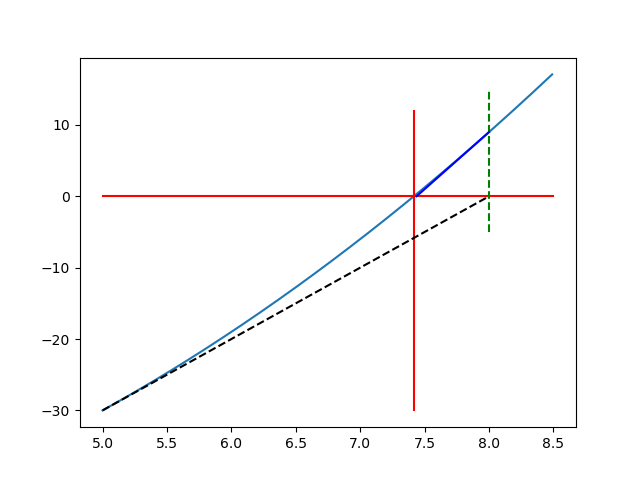
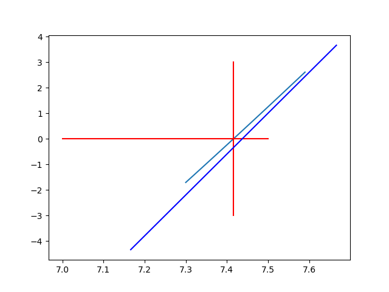
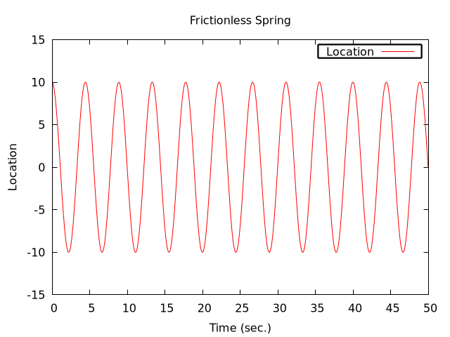

Table of Contents
- 1. An Introduction to Differential Equations
- 2. Practice Simulating With DEs
1. An Introduction to Differential Equations
1.1. Why are Differential Equations an important technique for computational modelling in psychology and neuroscience?
1.1.1. The Action Potential classExercise
- 10 minutes to brush up on what an action potential is.
- Then be able to draw one on the board and explain,
- What are the axes?
- What ion causes the upward deflection?
- What causes the repolarization?
- Who discovered the action potential?
- Who won the Nobel Prize for characterizing the ionic events of the action potential experimentally and building a mathematical model?
- Did you draw this? https://commons.wikimedia.org/w/index.php?curid=44114666
1.1.2. Why is the action potential relevant for a discussion of DE's in modelling?
The computational model of the action potential is a partial differential equation and action potentials, "spikes", are often taken to be the information processing unit of the nervous system.
DE's are the way we capture dynamics, how things change over time. If you think some neural or cognitive process that you are interested in is changing over time, then you are interested in dynamics and the first approach you should think of for modelling it is a differential equation.
1.2. Notation
Concise summaries of things that would take too long to write out in detail. Mathematical notation is just a technical emoji. You probably know the "math" they represent; you just don't know the abbreviation that is being used.
Write out in long hand (or type on your computer) what is meant by the following:
\[\sum_{\forall x \in \left\{ 1 , 2 , 3 \right \}} x ~=~ 6\]
1.2.1. Multiple Ways to Say the Same Thing
\(\frac{dy}{dx}\)
\(\dot{x}\)
\(x'\)
\(f'(x)\)
Moral: Don't let weird symbols put you off trying to understand. Plenty of musical people can't understand a score. Just because you don't understand a mathematical score does not mean you don't understand the mathematics.
1.3. Differential Equations - Equations with Derivatives
1.3.1. What is a differential equation?
Give me an answer that uses no equations. Just words.
1.3.2. What is a derivative?
Give me an answer that uses no equations. Just words.
1.3.3. Derivatives are Slopes
- What is a slope?
- When in doubt return to definition.
- Deriving the definition of a derivative.
- What is the definition of a derivative?
1.3.4. Digression: Use your computer as a tool for exploration
import matplotlib import matplotlib.pyplot as plt import numpy as np plt.clf() xs = [1,2,3,4,5] ys = [2,4,6,8,10] plt.plot(xs,ys) plt.savefig("./images/p_p.png")

Figure 1: A Simple Plot
1.3.5. What is the Slope of a Curve?
(ql:quickload :eazy-gnuplot) (use-package :eazy-gnuplot)
(defun scatter-plot (output) (let ((point-max 100) (point-type 7) (point-color "red") (step-size 1) (slope 0.4)) (with-plots (*standard-output* :debug nil) (gp-setup :terminal '(pngcairo) :output output) (plot (lambda () (loop for p from 1 upto point-max by step-size do (format t "~&~a ~a" p (+ (- p step-size) (* (- p step-size) slope))))) :with `(:lines :lc :rgb ,point-color))))) (scatter-plot "./images/s-p.png")

Figure 2: A line drawn with gnuplot called from common-lisp library "eazy-plot". Note the programmatic use of plot commands. Much harder to get started. Much greater control later on.
1.3.6. Thinking About Slopes
- Describe in words a reallife scenario that matches the process being plotted above.
- How would you define a slope for a curve like this?
1.3.7. How do you find the slope of a curve?
from matplotlib import pyplot import matplotlib.pyplot as plt import numpy as np a = np.linspace(-4,6,num=120) b = [x**3 for x in a];#list comprehension plt.clf() plt.plot(a,b) plt.plot([2,2],[-100,8], 'k-',lw=2) plt.plot([-4,2],[8,8], 'k-',lw=2) plt.plot([4,4],[64,-100], 'k-',lw=2) plt.plot([-4,6],[-64,56], 'r-',lw=2) plt.plot([-4,4],[64,64], 'k-',lw=2) plt.plot([4,6],[64,64], 'k--',lw=2) plt.plot([2,4],[8,64], 'k-',lw=2) plt.savefig("./images/curve-slope.png")

Figure 3: The slope of a curve illustrated. In this example I use a series of python commands and the python numpy library. There are many ways to get things done. Find one that works for you, and try to think about how to learn something that will serve you long into the future, and not just the tool that meets immediate needs.
1.4. Derivatives are Instantaneous Slopes
You pick two points that are "close enough" and you get an answer that is "close enough." If your answer isn't "close enough" then you move your points closer, until in the limit there is an infinitesimal distance between them.
Definition:
\[\frac{df}{dx} = \lim_{h \to 0}\frac{f(x + h) - f(x)}{(x + h) - x}\]
1.4.1. Digression: Writing Math in Documents
The current standard tool for nicely typeset math is LaTeX. You can use this in jupyter notebooks and even some in Word. However, the most powerful way is just to write the document as a simple text file with the .tex ending and use TeX post-processors. This is easiest in Linux, but isn't too hard for both Windows and OSX. Here I use LaTeX fragments in side an "org" file compiled by emacs using other programs on my computer.
- Using Derivatives to Solve Problems With a Computer
- What is a square root?
What is the solution to \(y=x^2\) if I tell you what \(y\) is?
Thinking about how to solve it. Some discussion questions:
- Come up with a guess (e.g. in your head what would you guess is the square root of 128?).
- Write a formula that would allow you to compute the error (or how far off you were).
- How much should you adjust your guess to get closer to the correct answer?
- What is the derivative of \(x^2\)? Does it have a place in your formula?
- Give a reason graphically why you ought to be able to use this derivative to help improve your guess.
- What happens to the sign of the "adjustment" when our guesses go from giving us too big an answer to too little an answer.
- What is a square root?
- Analytical Solutions
Let software be your guide.
f(x) := x^2; tex(diff (f(x), x));
\[2\,x\]
- Working Through an Example
- When in doubt, guess
How much is your guess off?
\(\mbox{Error} = \mbox{(my guess)}^2 - \mbox{128}\)
How much does the error change when the guess changes? This is a derivative. A rate of change.
\(\frac{\Delta~\mbox{Error}}{\Delta~\mbox{Guess}} = \frac{\mbox{Error(Guess1) - Error(Guess0)}}{\mbox{Guess1} - \mbox{Guess0}}\)
As the guess gets very small this will approach the definition of the derivative.
We have a function for how to compute the result of our guess and we can get the derivative of that either by hand or by using a computer algebra system.
\[\frac{\mbox{dError}}{\mbox{dGuess}} = \frac{\mbox{f(Guess1)} - \mbox{goal} - \mbox{f(Guess0)} + \mbox{goal}}{\mbox{Guess1} - \mbox{Guess0}}\]
- Using these relations can we come up with a formula for how much we need to adjust our guess based on how big the error was?
#Error Plot #What is square root of 55? plotData = [(x**2-55,x) for x in np.arange(5.0,8.5,0.01)] plt.clf() plt.plot([y[1] for y in plotData],[x[0] for x in plotData],) plt.plot([5.0,8.5],[0,0],'r-') plt.plot([np.sqrt(55),np.sqrt(55)],[12,-30],'r-') plt.plot([5.0,8.0],[-30,0],'k--') plt.plot([8.0,8.0],[-5,15],'g--') plt.plot([8.0,8.0-(9.0/16)] , [9.0,0.0],'b') plt.savefig("./images/sqrt55.png")

Figure 4: Slopes for Curves
plotData = [(x**2-55,x) for x in np.arange(7.3,7.6,0.01)] plt.clf() plt.plot([y[1] for y in plotData],[x[0] for x in plotData],) plt.plot([7.0,7.5],[0,0],'r-') plt.plot([np.sqrt(55),np.sqrt(55)],[3,-3],'r-') xs = [np.sqrt(55)-1/4,np.sqrt(55)+1/4] plt.plot(xs , [16*x-119 for x in xs],'b') plt.savefig("./images/sqrt-more.png")

- When in doubt, guess
- Finding Cube Roots class_exercise
- What is a cube root?
- What is the derivative of \(x^3\)?
- Find it with a computer algebra system even if you know how to do it by hand. A simple way to make sure you are on the right track with a new programming tool is to do something in code that you can do in your head or on paper to make sure t
- Write two Python Functions: one to
returnthe cube of a number, and one toreturnthe derivative when evaluated at a particular value ofx.
f(x) := x^3; df:diff(f(x), x); tex(df); newline(); print("The derivative of x^3 at 3 is: ",ev(df,x=3));\[3\,x^2\] The derivative of x3 at 3 is: 27
(setq *read-default-float-format* 'DOUBLE-FLOAT) (defvar *goal* 128.0) (defvar *initial-guess* 5.0) (defun x-cubed (x) (* x x x)) (defun diff-x-cubed (x) (* 3 x x))
(defun get-step (guess &optional (goal *goal*)) (/ (- goal (x-cubed guess)) (diff-x-cubed guess)))
(defun get-cube-root (goal initial-guess &optional (tolerance 0.001)) (loop for error = (get-step initial-guess goal) then (get-step new-guess goal) for new-guess = (+ initial-guess error) then (+ error new-guess) while ( > (abs ( - (x-cubed new-guess) goal )) tolerance ) do (format t "new-guess is ~,15f~%" new-guess) finally (return new-guess)))
;; let's try it out (get-cube-root 128 5.0)
5.039684219366759
2. Practice Simulating With DEs
2.1. Frictionless Springs
2.1.1. The equation of a frictionless spring?
\[ \frac{d^2 s}{dt^2} = -P~s(t)\]
What does it mean?
- How do we finesse the derivatives?
Use definitions.
Imagine a little time has gone by (\(\Delta~t\)). What is our new position (\(s\) is for space)?
\[\frac{s(t + \Delta t) - s(t)}{\Delta t} = velocity \approx \frac{d s}{d t}\].
What is our initial velocity? Assume zero.
How will our velocity change with time?
\[\frac{v(t + \Delta t) - v(t)}{\Delta t} = acceleration \approx \frac{d v}{d t} = \frac{d^2 s}{d t^2}\]
And we have a formula for this. We can now bootstrap our simulation.
(defun s-of-t (delta-t v s) (+ s (* v delta-t))) (defun v-of-t (delta-t a v) (+ v (* a delta-t))) (defun a-of-t (p s) (* -1 p s))
Note the similiarity of the two functions. You could write a helper function that was generic to this pattern of old value + rate of change times the time step, and just used the pertinent values.
;; generating initial values and variables (defconstant +init-v+ 0 "The initial Velocity") (defconstant +init-s+ 10) (defconstant +p+ 2) (defconstant +delta-t+ 0.05)
(defun release-spring (&optional (repeat-n 5)) (loop repeat repeat-n for a = (a-of-t +p+ +init-s+) then (a-of-t +p+ s) for v = +init-v+ then (v-of-t +delta-t+ a v) for s = +init-s+ then (s-of-t +delta-t+ v s) for time = 0 then (+ time +delta-t+) collect (list a v s time)))
(defun spring-plot (output) (let ((data (mapcar (lambda (a) (cons (fourth a) (third a))) (release-spring 1000))) (point-type 7) (point-color "red") (step-size 1) (slope 0.4)) (with-plots (*standard-output* :debug nil) (gp-setup :output output :terminal '(:pngcairo) :title "Frictionless Spring" :xlabel "Time (sec.)" :ylabel "Location" :key '(box lt -1 lw 2 opaque)) (plot (lambda () (loop for p in data do (format t "~&~a ~a" (car p) (cdr p)))) :with `(:lines :title "Location"))))) (spring-plot "./images/spring.png")

2.2. Damped Oscillators
Provide the code for the damped oscillator. It has the formula of
\[ \frac{d^2 s}{dt^2} = -P~s(t) - k~v(t) \]
This should really only require changing one line of your code for the simple harmonic oscillator.